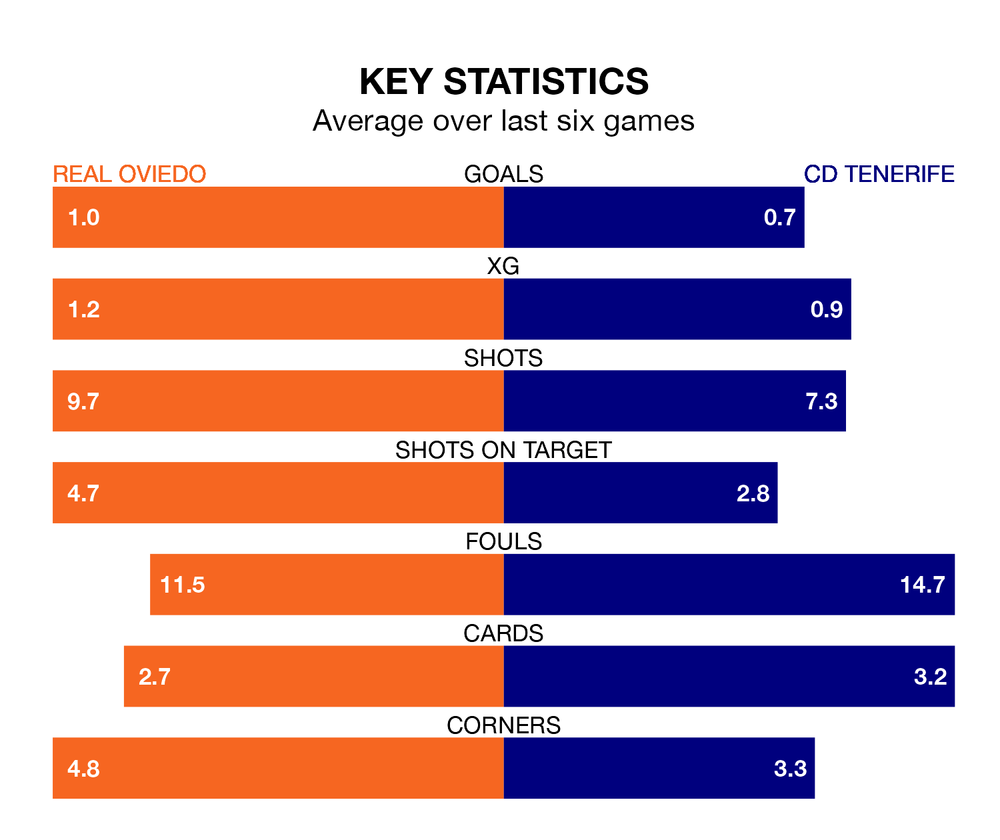

CD Tenerife travel to Real Oviedo on Sunday in the Segunda División.
The visitors come into the game on the back of a draw in their last match, having tied with Leganés 0-0 at home.
Oviedo, meanwhile, lost their last match, 2-0 against FC Cartagena.
With 32 goals in 36 games so far this season, Tenerife are scoring at below the league average rate with 0.9 goals per game. But they are conceding fewer than average too, letting in 36 goals at a rate of 1.0 per game.
Oviedo, meanwhile, are above average scorers, with 1.2 goals per game, compared to a league average of 1.1. They have conceded 0.9 goals per game.
In the last 10 years, Oviedo and Tenerife have played each other on 17 occasions. Oviedo won eight of them, Tenerife five, and they drew four times.
On average, Oviedo scored 1.1 goals and Tenerife 0.9 in those matches.
Their last meeting was on August 14, when Tenerife won 1-0 at home.
In Juan Soriano Oropesa, the away team can rely on one of the league's safest pair of hands. He has kept 14 clean sheets in his 36 appearances this season, and only two other 'keepers – Leganés's Diego Conde and SD Huesca's Álvaro Fernández – have been able to prevent the opposition scoring on more occasions in the Segunda División.
In the hosts' net, Leo Román has 11 clean sheets in 36 games.
Oviedo are sixth in the table after 36 games, of which they have won 14 and drawn 13, earning 55 points.
Tenerife are six places behind Oviedo in 12th, with 12 wins and 10 draws putting them on 46 points.
The home side are in mixed form in the Segunda División, with two wins and two draws from their last six games.
With a win and three draws over that period, Tenerife's form is slightly worse – they have taken six points from 18, compared to Oviedo's eight.
Updated: 07:59 (UTC), 26/04/24